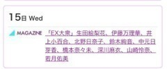
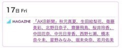
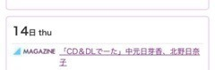
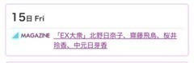
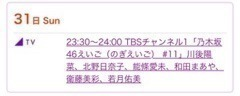
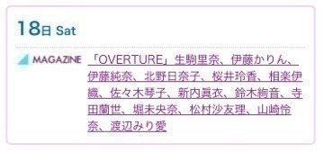
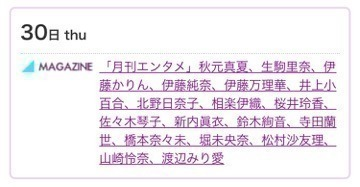
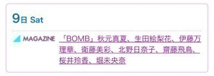
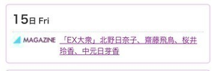
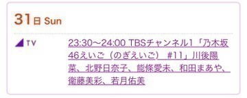

2016/0630Thuキャップの閉め忘れ
みなさまこんばんは！
北野日奈子です(｡・・｡)！
まいちゅんのラジオの
モーニングコールコーナー
ちゃんと出られました！！！
約束通り、ワンコール目ででれました！
先週からの一週間の
心残りや悩みが１つ
解消されて気持ちいい朝でした♪笑
今回、こうやって
また私に電話をかけてくれた
まいちゅんとスタッフさん！
ありがとうございました！
電話がかかってくるまでの時間
ほんと緊張した～！笑
リスナーの皆さん！
ラジオを聞いてくださってありがとうございました！


運命共同体
今日は1日収録でした！！！
新曲の振り入れもしました！！！
はやく皆さんにみてもらいたいな～♪
毎日ほんとにたのしくて
ずーっと笑ってます！！！
皆さんにも楽しんでもらえるように
いっぱい笑顔になってもらえるように
がんばります！！！
お知らせ！
6月




7月






明日から7月ですね！！！
はやい！あっという間！
今年も半年きりました！！！
わー！おそろしい！
時間がー
はやいよー
経つのがー
はやいよー
一瞬一瞬を大切に過ごすぞ！！！
最近のみなさんのオススメの
音楽ありますかー？
それでは今日はこのへんで！
はやく明日になってスイカたべるぞ～
2016/0629Wedはてな
みなさまこんばんは！
北野日奈子です(｡・・｡)！
今日は朝早起きして
ハンバーグを朝からたくさん食べました！
夜ご飯にもハンバーグ1個半食べたよ！！！
ハンバーグ！
今日はハンバーグばっかり！
ハンバーグすき！

UTBさん発売中です！
皆さん、貞子vs伽倻子の映画
みましたかー？
あれは、映画館でみたほうがいいですよ！
ネタバレしちゃうといけないから
いろいろは話せませんが
最強に強いです！2人とも！
貞子と伽倻子！
それから、霊媒師さんって本当にすごい方だって思いました！
最近、みたい映画がたくさんあります！
全部みれたらいいな～
世界から猫が消えたなら は
2回みました！
とてもいいお話で
何度観ても感動します！
人とのつながりや
何気ない物でも
たくさんの思い出や感情が
そこにあるんだなーって思いました！
この一瞬一瞬を無駄にしないように
私らしく楽しみながら頑張ります！
最近ね、マンゴーを飲んだり食べたりできるようになってね、
それからはマンゴーってつくものを何でも試したくなってるの！！！
ドライフルーツもだいすきだけど、
スムージーもすきになったの！！！
皆さんはあんまり食べたりしなかったものや
苦手なもので最近食べれるようになったものとかありますか？(｡・・｡)
お母さんにお家で
ヒナセレやりなさいよっ！！！って
怒られた10秒後に
お父さんにメールで
ヒナセレやらなきゃ！！！って
2人に同時に言われたので
本当にそろそろやります。。。
待たせてしまってすみません。。。
それよか、ぱぱとまま
違う場所にいたし
ヒナセレの話し今日別にしてないのに
同時くらいに言ってきたことが
びっくり！！！
チップ、暑すぎで
顔が。、。
それでは今日はこのへんで！
おやすみなさい！
2016/0628Tue呼び出しボタン
みなさまこんばんは！
北野日奈子です(｡・・｡)！
最近、ブログもメールも
ちゃんと送れない！！！
未送信になってたり
いつまでもグルグルしてたり。。。
6月も残り数日で、
まだあの通知が私の携帯には
届いてないけどきっと、もう届く寸前なんだろうな。。。
ポケットWi-Fiを持ち歩かなきゃ！
3日間くらい持ち歩いてたんだけど
ちょっとかさばるから持ち歩かなくなっちゃった！！！
小さいWi-Fiを手に入れてやる！！！

笑ってる
ここ数日、夜ソファーで
寝そべってテレビ見ながらそのまま
寝ちゃうことが多いです(｡ρω-｡)。。。
いつのまにか寝落ちちゃう感じ
たまらなく気持ちいいですよね！！！
昨日は、バラエティー番組をみながら
寝ちゃいました！！！
みていたドラマが一通り最終回を終えて
今期のドラマも楽しみなのばかり！
みなさんの見る予定のドラマや番組はなんですかー？
ドラマとかの役で女優さんが悪い顔をしてるのをみると、
真似したくなります(｡・・｡)！
悪い顔！！！
得意だからね(｡・・｡)悪い顔(｡・・｡)
好きな曲を分けて
プレイリストをつくるのにはまってるの！
好きな曲だけをバーーーッと並べて
上から聞くのもいいけど、
曲を分けて聞くのもいいですよ！！！
そうだ！新曲のレコーディングをし終わったんですが、
終わった後にレコーディングのスタッフさんに
北野！上手くなったな！って言われて
嬉しかったー！！！
14枚目の不等号をレコーディングしてる時にも上手くなったな！アンダーライブで上手くなったんだな！って言ってもらえたんですが
今回もまた言ってもらえて
もっとがんばろー！と思いました！！！
歌もダンスも上手くなりたい！！！
夏のツアーでは、
選抜として成長している私を皆さんに見てもらえるようにがんばるぞー！！！
たくさん鏡の前と家族の前で練習して
表現力もつけられるようにがんばります！
UTBさん発売中です！
ひめたんのブログに私が載ってた♡
ぐふふふ♡うれしい♡
ひめたんとは、本当にこんなに仲良くなると思わなかった！！！
高校3年生の時にお互い
同じ高校に転校したんだけど、
転校したての頃は先輩だから、一緒にいるのが
緊張してたし全然話せなかったから
今こうやってなんでも話せる大好きな人の1人になっていてとても嬉しい！！！
サンクエトワールの名前を決める時に
どうせ一度きりっていう名前も候補にあがってたんだけど、
私たち2人の見た目のどうせ一度きり感が
好きです(｡・・｡)！笑
どうせ一度きりとネガティヴにくよくよしながら、根性と芯の強さで
自分たちの力で一度きりにしないかんじ！
ひめちゃんはきっと私はそんなに強くない！って言うだろうけど、
仲良くなってから一緒にアンダーで過ごした
1年間を思い出すと
ひめたんは本当に強くなったと思います！
どんどん弱気になっていく私たちが
お互いを助け合って奮い立たせて
本当に頑張ってきてよかったって
選抜発表で名前が呼ばれた時に
心から思いました！
今は選抜メンバーの先輩と
一緒の空間でお仕事してることが
本当に楽しくて刺激的で
その中に一緒に頑張ってきた
ひめちゃんがいることも嬉しくて
いろいろ思い出すといつも嬉しくなって
泣きそうになる！！！
毎日たのしいんだ！！！
もっとがんばります！

ひめちゃん
より目へたっぴ！
お知らせ！！！
6月




7月





それでは、今日はこのへんで！
あ！10月29日の幕張個別握手会で
仮装します！！
ハロウィン！！！！
なにしよう！
部数ごとに変えよう！！！
なにか、リクエストがあれば教えてください！
2016/0627Mon歩数と歩幅
みなさまこんばんは！
北野日奈子です(｡・・｡)！
今日は朝からあの番組の収録をして
そのあと夕方から
飛鳥ちゃんとひめちゃんと3人で
EX大衆の取材をして頂きました！！！
トライアングル！
夏の大三角形！！！
3人ともすごく仲良しだけど
3人だけでのお仕事は今日が
はじめてだったかな？(｡・・｡)♡
だーいすきな2人と一緒に
お仕事だったから
ずーっと1人で笑って喜んでたよ♪
だいすき！あすか！
だいすき！ひめちゃん！
今度、3人でもご飯行こうね！
そんな、EX大衆さんでは
選抜のことやお互いのことについて話しました！
発売は7月15日です！！！
ぜひ、みなさんみてください！

初！
衣装で
シャツ一枚でした！
UTBさん発売中です！
最近は、いろいろな曲を聞きます！
もちろんMr.Childrenさんも！！！
あ！そうだ！
昨日ね、お母さんとチップとしろみときみ以外の
お父さんとお兄ちゃんと妹と私の4人で
カラオケに行ったんだ～♪
久しぶりにみんなでいって
楽しかったよ♪
いろいろ歌いましたが
最後の一曲が楽しかった！
いつも、カラオケの最後の方になると
みんなで盛り上がれる曲を
お兄ちゃんがいれてくれるのですが
今回のカラオケの最後は
RADIOFISHさんのPERFECT HUMAN
だったよー！！！
ほんとにたのしかったー！！！
またいきたいな♪

明日は雨予報ですね。。。
午前中のうちに晴れてくれたらいいな～
工事中の父の日企画をみて思ったけど
本当に私
お父さんと仲いいな～と思います！
お父さんだけじゃなく
お母さんともお兄ちゃんとも妹とも
チップともしろみともきみとも仲良しだけど
実はお父さんとお母さんの寝室の
お父さんとお母さんのベットを
私がくっつけて
そのくっつけた間で寝てるんだ～
ぐへへへへ(´ｰ∀ｰ`)♪
妹はちゃんと自分の部屋で寝てるのに
お姉ちゃんの私は自分の部屋で寝てません！
ごめんなさい！！！
もうすぐ20歳だし。。。
なおさなきゃな～。。。
きっと大人になって一人暮らししたら
なおせるとおもいます！
それでは、きょうはこのへんで
おやすみなさい！！！
2016/0626Sun十字路
みなさまこんばんは！
北野日奈子です(｡・・｡)♪
今日は朝からチップのお散歩に
お父さんとお母さんと行ってきたよ！！！
久しぶりのお散歩で
楽しかったよ～♪
それから、パン屋さんにも行って
初めて行く場所だったから
たくさん買っちゃった！
美味しかったよ～！やっぱり甘いのが好き！


より目がすき
今日は握手会のこと！
関東では初めての5部制！！！
5部制になってやっと来れたよ！と言ってくださり来てくださったファンの方もたくさんいらして、
やっぱりみなさんと顔をあわせる機会が増えることは素敵なことで幸せなことなんだ
って改めて気づきました！
15枚目からは
全会場5部制になります！
不安です！
けど、それ以上に楽しみたいと思います！
1部は 別れ際、もっと好きになる
白バージョンを着ました！！！
髪型はストレート！
でも、写真撮り忘れちゃった。。。
2部は太陽ノック
MVバージョン！！！
髪型は、ウェーブに編み込み！
これも撮るの忘れちゃった。。。
3部は、不等号！
自分の衣装！！！
髪型はおんぷちゃん外はね！

実はこの日、
アイメイクがノーメイクでした！！！
みんな気づかなかった！！！
なんで！！！
この写真だとわかるよね！
4部は、不等号。
袖ありの方！！！
2パターンあるから！！！
髪型は編み込み三つ編み！
1番最初に載せた写真の衣装です！
これ！！！
耳大きいんだ～
5部は嫉妬の権利！
水色バージョン！
蘭世に借りたよ！
髪型はハーフアップ！

怒ってるわけじゃないです。。
こんな感じでした！！！
普段は自分の衣装しか着れないから
こうやって他のパターンや
他の色を着るのたのしい！
それから、衣装着る時ってライブの時だけだけど、ライブの時は崩れちゃう髪型はできないから、衣装でも髪型が遊べたりするの
こういう機会しかないから新鮮！！！
アルバム握手会は
次の7月10日、横浜がラストです！！！
この日は、私の20歳の生誕祭があります！
1年かけて素敵なものをつくってくださった
生誕委員の方々はもちろん
応援してくださるファンの方に
感謝の気持ちを伝えられたらなと思います！
3部終わり予定みたいです！
ぜひ、みなさんいらしてくださいね♪

今日のチップ！
暑くてたまらないチップ！
ベロがながーいの！
それでは今日はこのへんで！
あしたはめっちゃ早起き！
朝からあの番組の収録です！
たのしみ！
がんばるぞー！！！
このあと、のぎえいごです！
ぜひみてね！